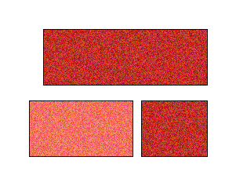
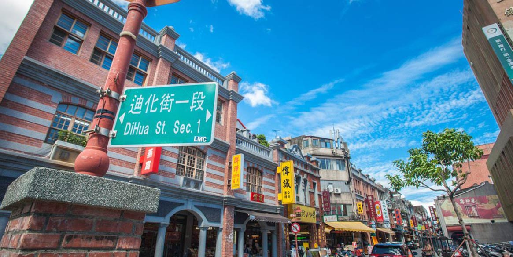
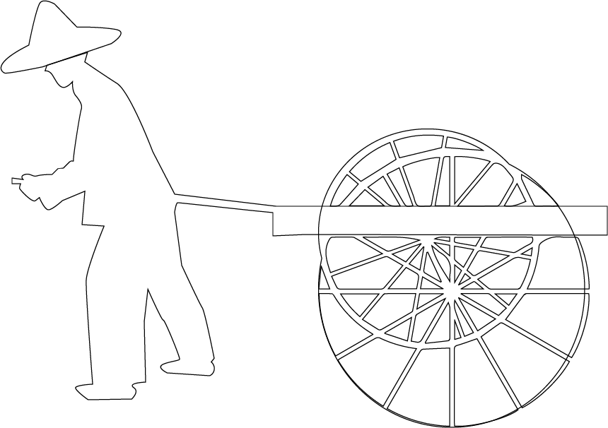

關於我們 


有別於傳統上大稻埕定義，本站介紹範圍聚焦在目前多數人熟悉的大稻 埕觀光區，以迪化街為主，延伸至捷運大橋頭站、重慶北路、市民大道以及碼頭一代，並 結合線上購物，最愛店家觀光路線規劃等使用者互動功能，盼能聚焦大稻埕觀光。
LOGO設計
以書法字體強調大稻埕的歷史文化感。
大字中間紅點為畫筆，代表著大稻埕在人文藝術上的輝煌歷史。
稻字融合稻榖元素，顯示出大稻埕最初以「曬稻穀的廣大場域」而得名。
埕字中心為茶葉，大稻埕清代開始，因茶葉貿易而繁華。茶葉為大稻埕歷史上重要之元素。


熱門商家
李亭香
_______位於迪化街一段309號，1895年創立的臺派糕點店，已傳承百年並持續創新臺灣糕點。


福來許珈琲館
_______位於迪化街一段的福來許珈琲館，仍有美麗的女給，穿著復古的旗袍，為各位端上有著 漂亮拉花的咖啡拿鐵，或者帶有在地特色的茶飲。更多的是能滿足五臟廟的小農餐食、 月老文化甜點、在地風味調酒，聽著當年的臺語老歌，創造屬於我們這個時代的珈琲館 文化。
波麗路西餐廳
_______位於民生西路上的波麗路西餐廳，1934年開業，為全台第一間西餐廳， 見證了大稻埕的繁華起落，時代的更迭。 走進波麗路 品嚐臺灣人最先認識的西餐味。


稻舍
_______大稻埕米行第五代返家，米食主題餐館重現家族碾米事業，在年逾百歲的紅磚洋樓裡， 以現碾的米，煮一碗飯，誠摯端上，台農71號益全香米，現碾現煮，聞得到 芋頭香，食材取自在地商家，每道料理，匯聚在地精華。
熱門景點
 大稻埕碼頭貨櫃市集
大稻埕碼頭貨櫃市集
 大稻埕碼頭
207博物館
霞海城隍廟
永樂市場
大稻埕碼頭
207博物館
霞海城隍廟
永樂市場
 新芳春茶行
新芳春茶行
 新文化運動紀念館
新文化運動紀念館
熱門商品

$350


交通資訊

至橘線大橋頭站、紅線雙連站、綠線北門站下車後，皆可步行 抵達。

- 大稻埕碼頭：綠17、紅33
- 迪化街：811、紅33
- 民生西路口（大稻埕碼頭）：539、669、785、民生幹線

永樂市場與大稻埕公園皆提供停車場
